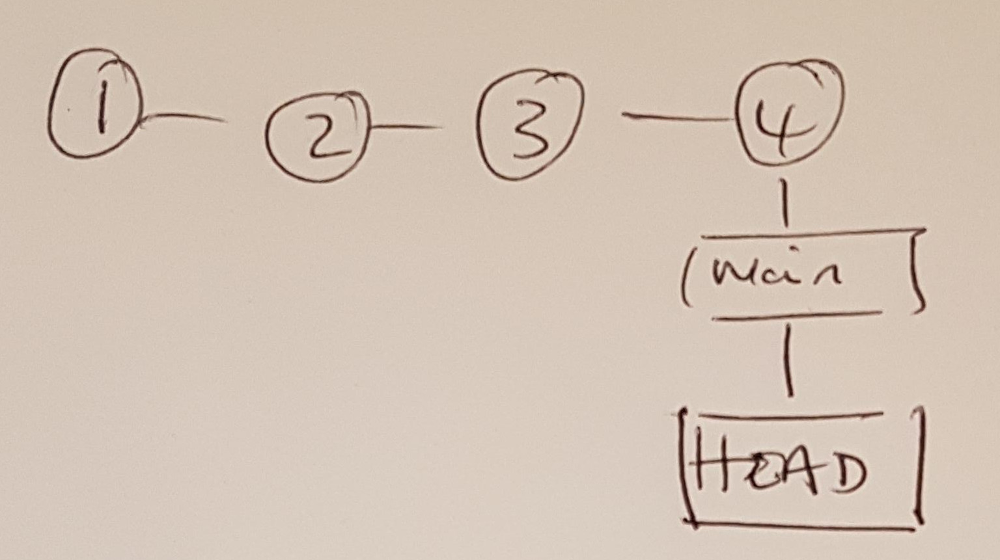
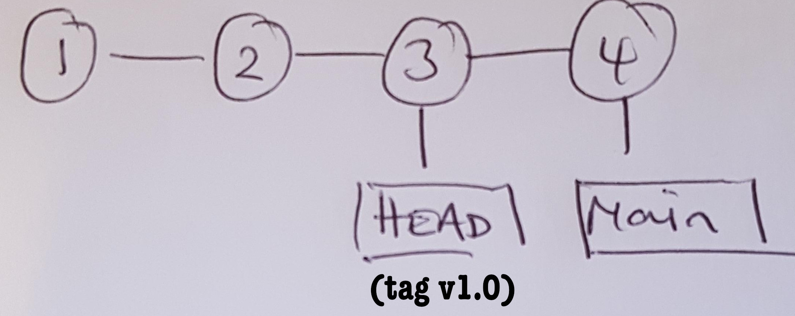
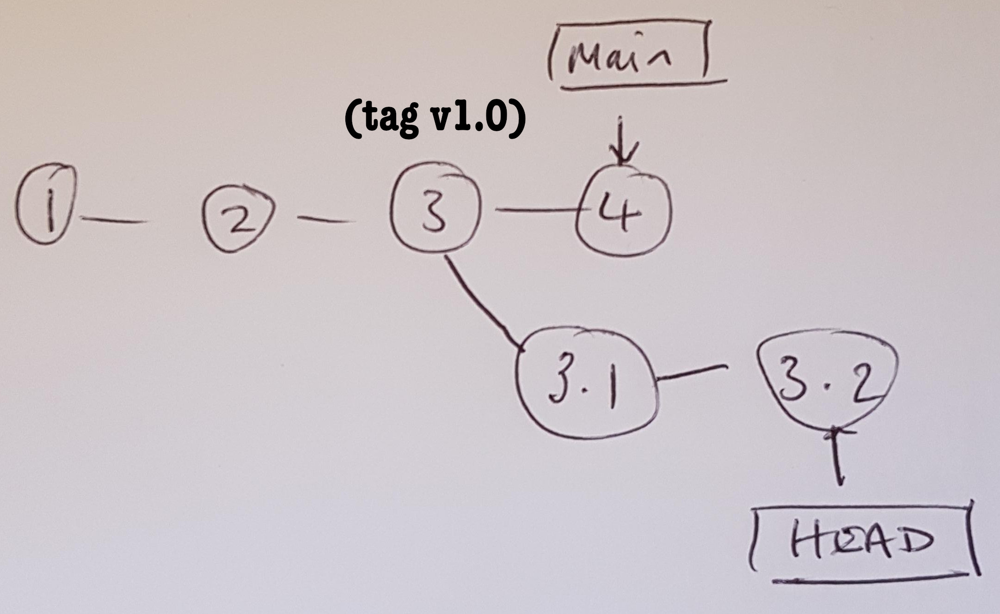
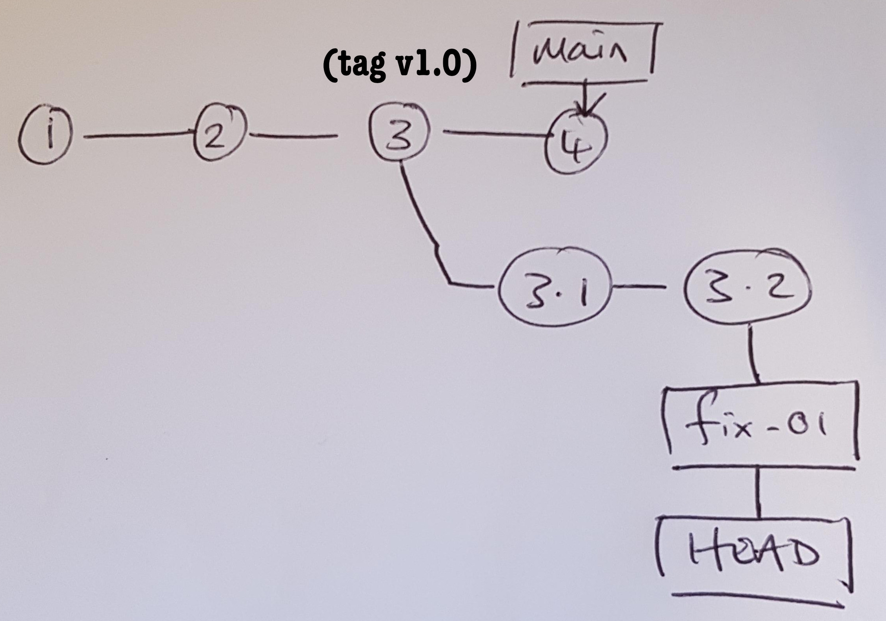

8 Branches
8.1 What is a branch?
Time to step it up a notch. With branching, practice and repitition is key to understanding. Try not to panic.
Branching is a mechanism that allows you to undertake work independently from the main (or base) content of a project while allowing you to keep in sync and also giving you the option of bringing your work back into the main content. The process allows multiple pieces of work by multiple people to be progressed independently within the same project. You might diverge because you have want to take the project in a new direction altogether or because you are working on a bug that is going to break things more before the fix is realised. Ideally, the work on your branch will be homogenous - it will, more or less, relate to one thing, one feature, one bug etc.
When you run git status you saw the text - On branch main as part of the output.
pwd
# /Users/mark/Documents/project/misc-stats/first-repo
git status
## On branch main
## Your branch is up to date with 'origin/main'.
##
## nothing to commit, working tree cleanThere are a range of strategies for the way that a group uses branching, but for our purposes, you can think of main as your default branch.
Similarly, when you ran git log the current commit reported is suffixed with (HEAD -> main). Both of these were a reference to the version on the branch that is currently linked to the working directory. It is where you presently are in the commit history.
git log --oneline
## 516ad1a (HEAD -> main, tag: v4.0, origin/main, rm, analysis-04) Code review comments
## a286918 Analysis 4
## 538330d Merge remote-tracking branch 'refs/remotes/origin/main'
## 49c68c2 Mark has also added detail to the readme.md
## 3a3dd8d Testing Sylvie
## 2829471 Merge branch 'analysis-03'
## be09457 (tag: v3.0, analysis-03) Finished surv
## 53115b6 minorFor example, initially there is a singular progression of the project, but at some point you will want to create a release for a software product, or a piece of documentation or an analysis. Later you may want to revise the release due to changes in project direction, new data, bugs etc. You use branches to facilitate this process in a logical and coherent way. Typically, you branch off from the default branch of a repository, but you can branch from any branch that exists.
In the examples encountered so far, the branching we have encountered is just a stem (specifically, the main branch). Below is a common type of representation of the kind of branch that we have dealth with so far.
The circles represent each commit, which would refer to changes in one or more files. The repository has gone through a series of commits (1, 2, 3, 4 etc.) and the working directory is currently looking at the repository version 4.

The arrow pointing at 4 is the current HEAD of the repository. HEAD is a special concept in git. It answers the question “What am I currently looking at?”
8.2 Time travel
The concepts associated with branching are easiest understood by demonstration and experimentation.
When you make a new commit to git, the branch reference is updated to point to the new commit. When you move to a new branch, the HEAD reference is updated to point to the branch that you switched to.
Go to the Chapter 14 resources page and save the branching.R file to your first-repo directory.
The file contains the following:
Code
# R script to demo branching
suppressPackageStartupMessages(library(data.table))
suppressPackageStartupMessages(library(survival))
suppressPackageStartupMessages(library(rtables))
suppressPackageStartupMessages(library(ggplot2))
message("-------------------------------")
message("NOW WE WILL MOVE ONTO BRUNCHING\n")
message("-------------------------------")
# Data generation ------------------
set.seed(1)
N <- 4000
d <- data.table(
id = 1:N,
u = rbinom(N, 1, 0.5)
)
d[u == 0, x := rbinom(.N, 1, 0.2)]
d[u == 1, x := rbinom(.N, 1, 0.8)]
b0 <- 3
b1 <- 1
b2 <- -2
b3 <- -1
e <- 1
w_cens <- 4
# Continuous outcome
d[, mu := b0 + b1 * x + b2 * u + b3 * x * u]
d[, y := rnorm(.N, mu, 1)]
# Binary outcome
d[x == 1, z := rbinom(.N, 1, 0.7)]
d[x == 0, z := rbinom(.N, 1, 0.3)]
# Survival outcome
# Median tte -log(0.5)/0.6 vs -log(0.5)
d[x == 1, w := rexp(.N, 0.6)]
d[x == 0, w := rexp(.N, 1.0)]
d[, evt := as.integer(w < w_cens)]
d[evt == 0, w := w_cens]
# Labels
d[x == 0, arm := "FBI"]
d[x == 1, arm := "ACTIVE"]
d[u == 0, age := "< 50 years"]
d[u == 1, age := ">= 50 years"]
# Descriptive summary -------
message("\nDESCRIPTIVE SUMMARY:\n")
lyt <- basic_table() %>%
split_cols_by("arm") %>%
summarize_row_groups() %>%
analyze("y", mean, format = "xx.x")
build_table(lyt, d)
# Analyses --------
message("\n\nANALYSIS OF CONTINOUS OUTCOME (UNSTRATIFIED):\n")
lm1 <- lm(y ~ x, data = d)
summary(lm1)Run the script:
Rscript branching.RImagine this was the first analysis for a project and will be sent to the clients. The completed work represents a milestone for the project so we stage and commit the file and then create a tag for it.
git tag -a v1.0 -m "Analysis 1"We continue with the work for the next deliverable completing a secondary analysis on the binary outcome z. Add the following code to the end of the branching.R script, re-run with Rscript branching.R and then commit the file to the repository.
message("\n\nANALYSIS OF BINARY OUTCOME (UNSTRATIFIED):\n")
lm2 <- glm(z ~ x, data = d, family = binomial)
summary(lm2)
pr <- predict(lm2, newdata = data.table(x = 0:1), type = "response", se = T)
d_fit <- data.table(
arm = c("PBO", "ACTIVE"),
x = 0:1,
pr_z = pr$fit,
pr_z_lb = pr$fit - 2 * pr$se.fit,
pr_z_ub = pr$fit + 2 * pr$se.fit
)We are not finished with our second deliverable, but at this point we realise that the initial analysis that was sent to the client was incorrect. As you may have spotted, we should have run a stratified analysis due to the presence of a confounder. We urgently need to re-issue the corrected analysis to the client. Bummer.
In contrast to the minor change above, in real life we might be much further along with this next deliverable, which may be vastly more complex than what I have illustrated above. For example, we may have introduced new files, restructured the original analysis, added functionality etc.
While we could go through the process of winding back all the changes, with revision control we do not have to because we can rewind to any point. We’ll go over one approach to this using git. It isn’t the ideal process to tackle the problem1 but it was chosen to highlight a few points.
8.2.1 Commit
First thing to do is to check that your code is running ok and then commit any files that have not yet been committed to the repository. Not doing so will cause you some major headaches, so best advice is to not forget to do this.
git status
git add braching.R
git commit -m "Commit of files part way through development"8.2.2 Rewind
We can rewind the state of our working directory to the time at which the deliverable was made. We do this by first using git log to find the commit hash or we can just use the tag that we set for the release. Using the tag is more convenient so let’s do that.
git log --oneline
git checkout v1.0
## Note: switching to 'v1.0'.
##
## You are in 'detached HEAD' state. You can look around, make experimental
## changes and commit them, and you can discard any commits you make in this
## state without impacting any branches by switching back to a branch.
##
## If you want to create a new branch to retain commits you create, you may
## do so (now or later) by using -c with the switch command. Example:
##
## git switch -c <new-branch-name>
##
## Or undo this operation with:
##
## git switch -
##
## Turn off this advice by setting config variable advice.detachedHead to false
##
## HEAD is now at a2cc6f7 Comments from code reviewIn terms of the schematic of the repository, the environment now looks like this.

We have move the HEAD such that our working versions now point to the files that were originally delivered to the client.
Don’t panic overly about the warning about being in the detached HEAD state.
What it means is that you are no longer on a branch. You have checked out a single commit in the history.
If you look at branching.R you will see that the starts of the secondary analysis has disappeared.
8.2.3 Fix issue
In order to fix the analysis we need to introduce the confounder as a covariate in the linear model. Introduce the following fixes. First to the descriptive summary:
message("\nDESCRIPTIVE SUMMARY:\n")
lyt <- basic_table() %>%
split_cols_by("arm") %>%
split_rows_by("age") %>%
summarize_row_groups() %>%
analyze("y", mean, format = "xx.x")
build_table(lyt, d)and then to the analysis make these corrections and finally re-run the script to confirm that it produces what we expect.
lm1 <- lm(y ~ x * u, data = d)
summary(lm1)Stage and then commit these changes. We can get some insight into the state of the tree now. Below I have added one more commit so that you can get a sense of how things are progressing.
git log --oneline --decorate --graph --all
## * 7ab12b3 (HEAD) Code review correction
## * 4cca810 Added emergency fix
## | * c82a48d (main) Started on secondary analyses
## |/
## * a2cc6f7 (tag: v1.0) Comments from code review
## * fa24778 branching.R
## * 3bdac46 Revised approach to capturing input
## * 327170a Minor edit
## * b078716 New file
## * 0cd2d52 First commitThe equivalent illustration would look something like this:

8.2.4 Make permanent
Now that we have fixed the code, we want to make the change permanent. That is, we want to formally tell git that our alternative history should be maintained. The way to do that is to create a new branch out of the recent changes (which already look like a branch).
Arguably, it would probably have been better to do this first given that we had to make the change. On the other hand, if we were just experimenting, then perhaps there was never any intention to make the change permanent and a new branch would not be required.
git branch fix-01
# Switch to new branch
git checkout fix-01When we look at the tree we see both HEAD and the branch (note the first line text which says HEAD, fix-01).
git log --oneline --decorate --graph --all
## * 7ab12b3 (HEAD, fix-01) Code review correction
## * 4cca810 Added emergency fix
## | * c82a48d (main) Started on secondary analyses
## |/
## * a2cc6f7 (tag: v1.0) Comments from code review
## * fa24778 branching.R
## * 3bdac46 Revised approach to capturing input
## * 327170a Minor edit
## * b078716 New file
## * 0cd2d52 First commitAnd now the picture is

If this is the version that we re-issue to the client, we might as well tag it.
git tag -a v1.1 -m "Analysis 1 (re-issue)"8.2.5 Switching back to the secondary
Switching back to our partially complete secondary analysis is simple:
git checkout mainIf you look at the branching.R script you will be able to see the secondary analysis we started some time ago. That is, if you look closely, you will see that the changes we just made in the fix-01 branch have not yet been propagated to the main branch. It is important that we pick up this fix.
This process is known as merging and it will be tackled shortly.
8.2.6 Clean up
When you are done with a branch as in you have finished all the work, merged (see next) and released, you might want to remove the branch.
You can do this with
git branch -d <branch name>noting that you can use a capital -D to force the delete irrespective of the merge status (unsafe).
The start of an alternative could be
git revert --no-commit <hash>..HEAD; git commit.↩︎